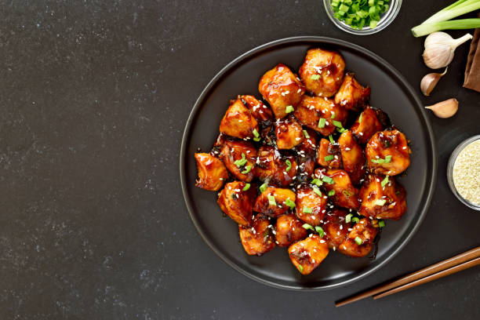

Chicken Teriyaki

Description
Chicken Teriyaki is a popular Japanese dish consisting of chicken that has
been marinated in a special sauce and then grilled or broiled. The sauce
is made with soy sauce, mirin, and sugar. It is often served with rice and
vegetables.
Ingredients
- 1/2 cup soy sauce
- 1/2 cup mirin
- 1/4 cup sugar
- 1 clove garlic, minced
- 1 teaspoon ginger, grated
- 1 pound chicken thighs, boneless and skinless
- 1 tablespoon vegetable oil
- 1 tablespoon cornstarch
- 1 tablespoon water
- Sesame seeds, for garnish
- Green onions, chopped, for garnish
Steps
-
In a small saucepan, combine soy sauce, mirin, sugar, garlic, and
ginger. Bring to a boil, then reduce heat and simmer for 5 minutes.
-
Place chicken in a shallow dish and pour half of the sauce over it.
Marinate for at least 30 minutes.
-
Heat oil in a large skillet over medium-high heat. Add chicken and cook
until browned on both sides and cooked through.
-
In a small bowl, mix cornstarch and water. Add to the remaining sauce
and bring to a boil, stirring constantly until thickened.
-
Serve chicken with sauce and garnish with sesame seeds and green onions.